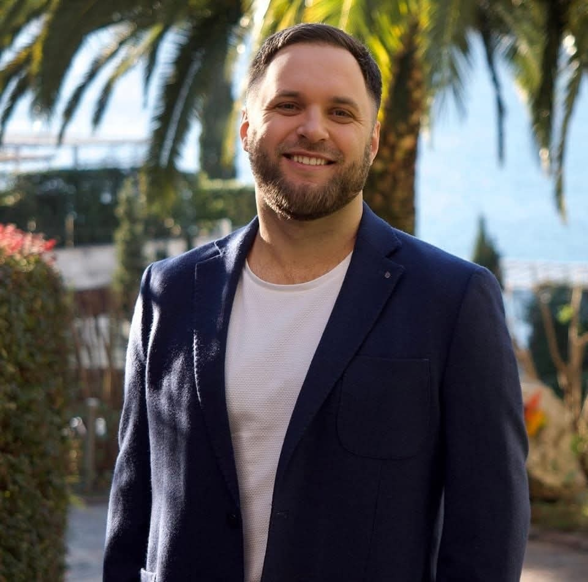
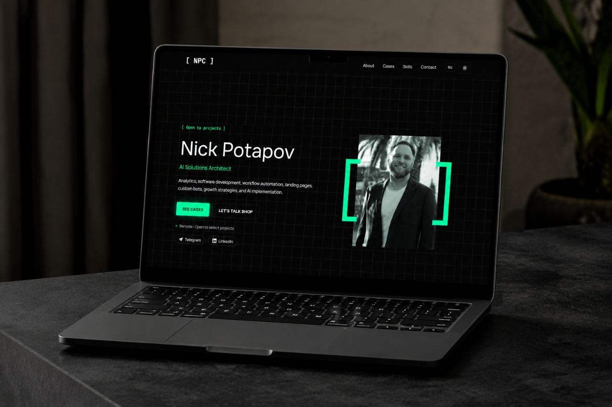
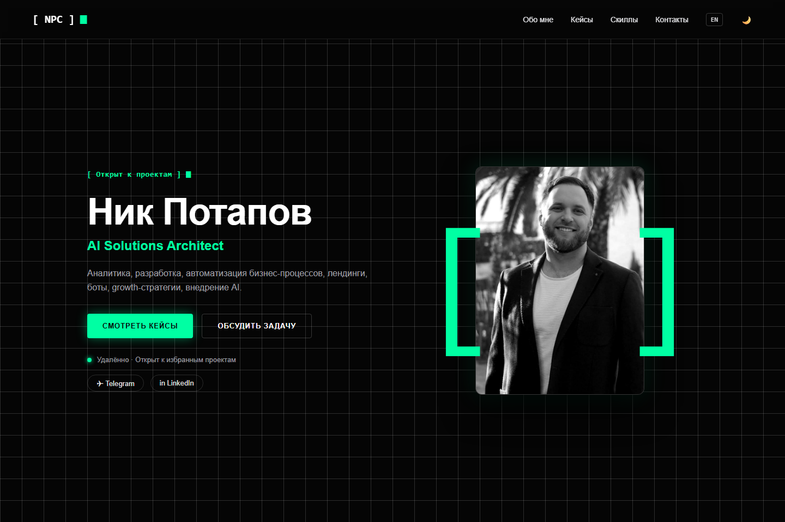
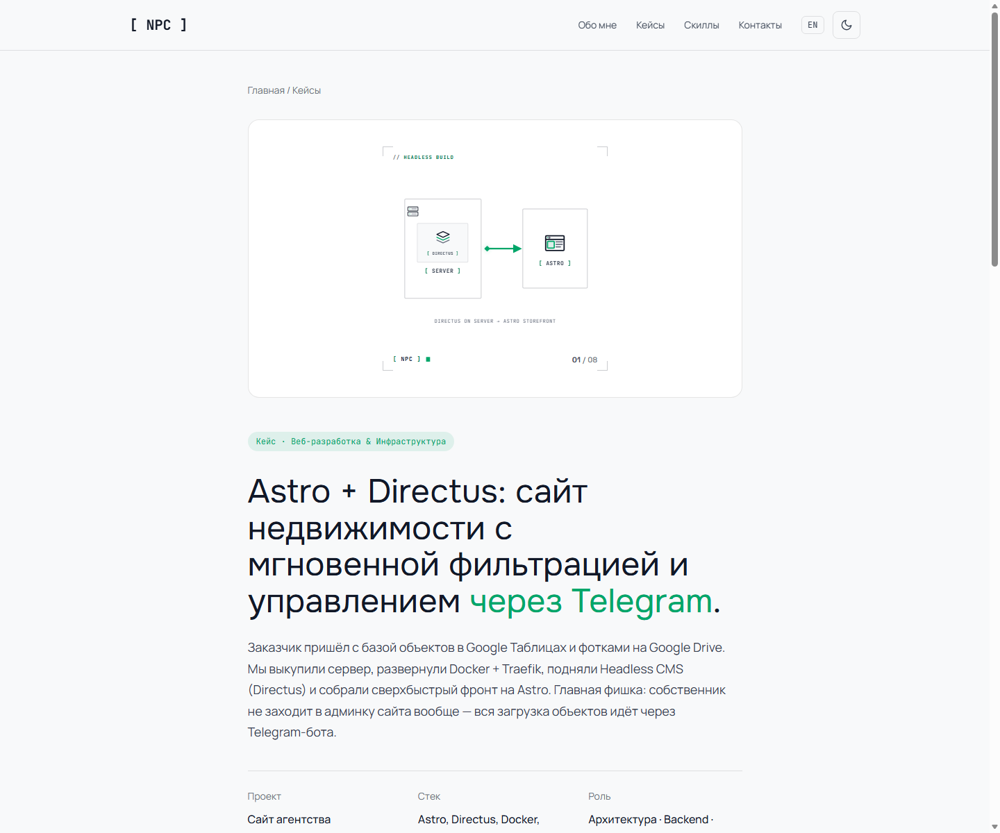
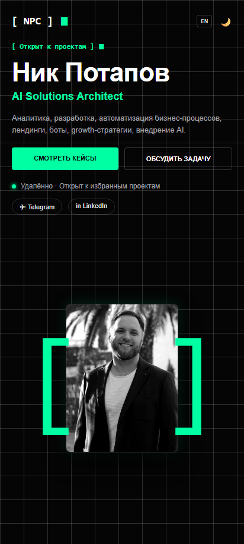
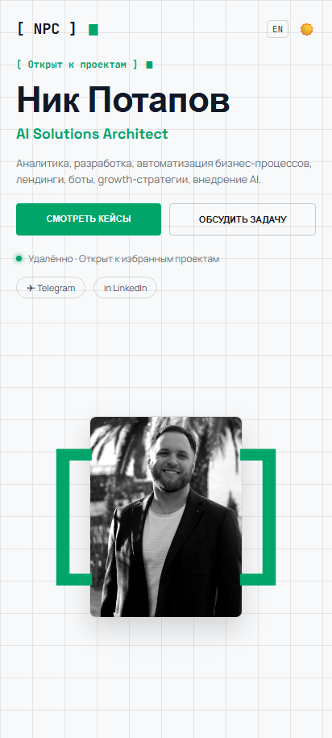

Проектирование инженерного бруталистского сайта-портфолио и витрины автоматизаций для Ника Потапова — AI-архитектора и эксперта по росту бизнеса.


Четыре фундаментальных элемента, на которых строится весь визуальный язык и характер портфолио Ника Потапова.
Математическая сетка 40x40px задает ритм чертежной доски инженера и гарантирует идеальное выравнивание всех блоков.
Квадратные скобки шрифтом JetBrains Mono выделяют ключевые сущности, логотип и теги рубрик в акцентном мятном цвете.
Терминальный символ ▮ и пульсирующая зеленая точка транслируют статус живой системы и готовность к новым проектам.
Интерактивные векторные диаграммы наглядно показывают схему движения данных между Telegram, CMS и фронтендом.
В играх NPC — это боты без свободы воли, застрявшие в бесконечной рутине. В бизнесе основатели и команды часто превращаются в таких же NPC: тратят часы на ручной перенос накладных, копипаст текстов и заполнение таблиц. Ник заменяет эту рутину AI-агентами, возвращая людям роль Главных Героев своей компании.
Мы проектировали сайт не как очередное банальное резюме, а как высокоточный инструмент фильтрации и конверсии целевых B2B-клиентов.
Клиенты устали от абстрактных слоганов. Каждый кейс должен наглядно показывать реальную схему движения данных, стек и работающий экран.
Терминальный брутализм (моноширинный шрифт, сетка 40x40, скобки [ NPC ]) отсекает случайных дешевых заказчиков и привлекает зрелый B2B.
Более 70% аудитории открывают сайт со смартфонов. Вместо длинных нудных веб-форм — мгновенный переход в квалифицирующего Telegram-бота.
Почему позиционирование Ника выигрывает у шаблонных студий и разрозненных фрилансеров.
| Критерий | Типичные AI-агентства | Фрилансеры с бирж | ⭐ Ник Потапов (NPC) |
|---|---|---|---|
| Визуальный стиль | Одинаковый неон, фиолетовые 3D-шары | Скучные страницы в Notion или резюме в PDF | Инженерный брутализм, математическая сетка 40px |
| Подача кейсов | Абстрактные слова «внедрили AI под ключ» | Список задач без подтверждённых цифр | 8 рабочих кейсов с разбором «Было / Стало / Результат» |
| Скорость работы | Перегруженные скрипты, долгая загрузка | Средняя скорость | Загрузка быстрее 0.5с, 100 баллов в Google PageSpeed |
| Точка входа | Форма из 7 полей с созвоном через неделю | Переписка в чате биржи | Мгновенный Telegram-бот с умным распределением задач |
Система построена на высокой контрастности, читаемости и мгновенном переключении тем оформления.
Характерный геометрический гротеск для заголовков первого и второго уровня.
Максимальный комфорт для чтения длинных описаний кейсов при интервале 1.6.
Моноширинный шрифт для квадратных скобок [ NPC ], тегов и метрик.
Реальные экраны сайта Ника Потапова в элегантных минималистичных фреймах без лишнего визуального шума.




Все элементы управления, размер кнопок и карточек оптимизированы под зону большого пальца (touch targets от 48px). Нативный горизонтальный скролл кейсов обеспечивает ощущение работы с быстрым мобильным приложением.
Каждый кейс на сайте имеет прямую ссылку, интерактивную анимацию и полный разбор архитектуры.
Сайт недвижимости с мгновенной фильтрацией и добавлением объектов из Telegram.
Голосовые заметки риелтора с фото автоматически парсятся в карточки CRM через AI.
Умный рерайтинг и рассылка объявлений по десяткам соцсетей и площадок в 2 клика.
Управление всей базой объектов недвижимости прямо со смартфона без тяжелых CRM.
Генерация 13 уникальных форматов на 6 языках из одного черновика через нейросеть.
Электронный помощник ведущего для офлайн-игр и авто-рейтинг игроков в таблицах.
Интерактивное меню ресторана в Telegram Mini App на Netlify и Supabase.
Интеллектуальное распознавание фото бумажных накладных и роутинг данных в таблицы.
Инженерный брутализм, мгновенная скорость загрузки и прозрачная демонстрация архитектуры ботов создали бескомпромиссный образ эксперта и выделили Ника Потапова среди сотен шаблонных агентств.